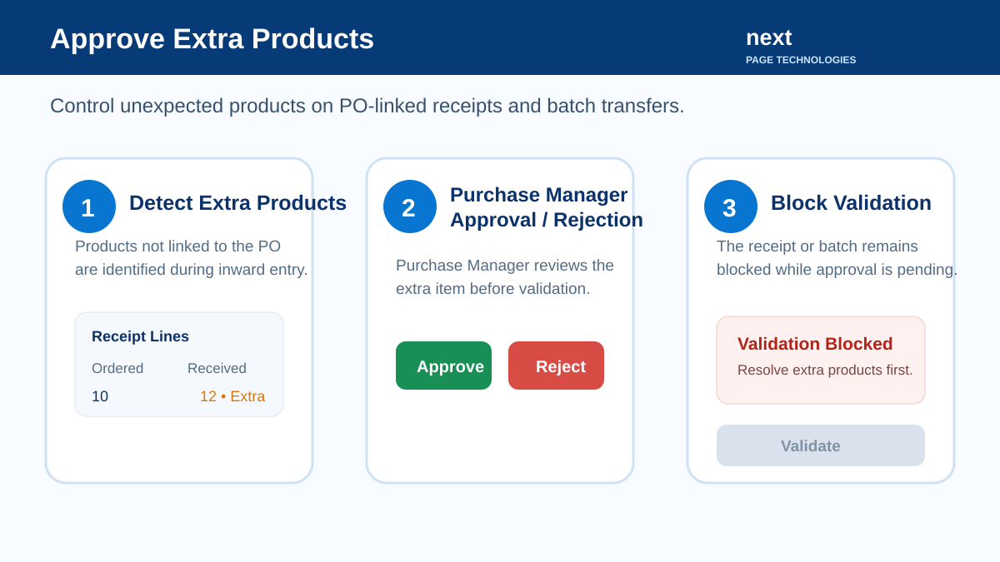
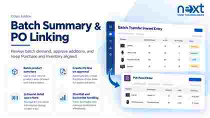

Approve extra products on PO-linked receipts, internal transfers and batch transfers before validation. Keep Purchase and Inventory aligned when unexpected products arrive.
Detect stock moves without a related purchase order line on PO-linked incoming or internal transfers.
Approve or reject extra products with Purchase Manager controls before transfer validation.
Approved extra products can be linked to the selected purchase order and its purchase line.
Receipt and batch validation remains blocked until pending or rejected extra products are resolved.
Detect the extra product, review it with the Purchase Manager, then approve or reject it before validation.

Review product-wise batch demand and inward status, manage lot or serial detail operations, create purchase order lines for approved items, and track shortfall/backorder handling.

Need implementation or support assistance? Talk to the Next Page Technologies team.